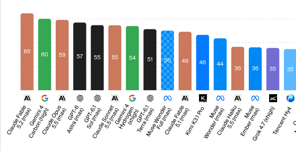
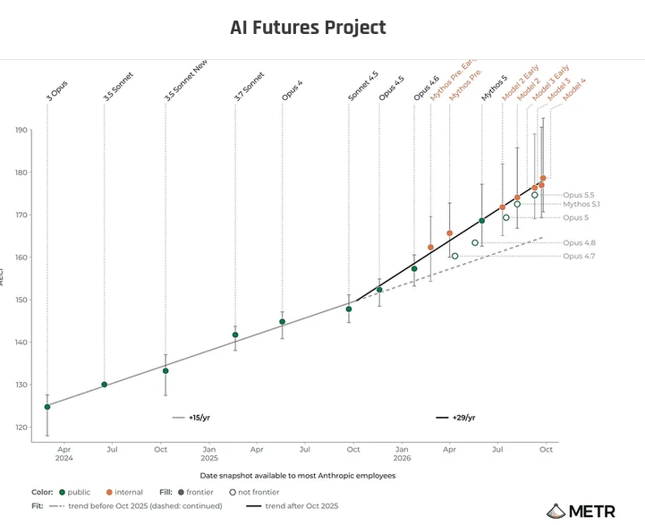
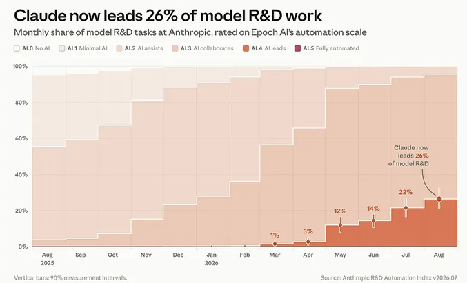

RSI has already started
AI Copium and AI Explained really opened my eyes to how fast AI is accelerating right now. I highly recommend checking out the videos I reference in this post (links below).
Fable 5.2 takes back the previous number one spot from Google’s Gemini 4 Carbon. Fable 5.2 has been reported to delay tasks and struggle in some areas of common sense (despite being the frontier right now). For me personally, my usage limit has been wiped out before I’ve gotten a proper feel for it; it’s very expensive.

A METR report came out recently. METR is an independent institution, and it reported on the inner workings of Anthropic. Its main finding is that Anthropic is essentially in a very early stage of recursive self-improvement.
METR found Anthropic’s progress has run 1.9x faster since October 2025, two years of progress in one year, with the AI-driven part of that (1.7x) being something one of the AI 2027 authors gave less than a 4% chance of happening by November, even in their most aggressive model. It’s shown in a graph with an upward slant and a visible trajectory.

The AECI on the Y-axis is an internal benchmark that combines a massive variety of benchmarks into one measure of overall model capability. In October of last year, it jumps significantly. According to the graph, we should be at around the Opus 4.8 level by now, around 165 on the AECI, but we’re not: we’re at around 178 and still increasing, and Anthropic themselves say they see no wall or bottleneck in sight.
In March 2026, Claude led 1% of Anthropic’s AI R&D tasks, meaning the AI leads but still requires human supervision and permission. Now? It’s at 26%, meaning Claude takes the lead on 26% of model R&D. The only step above this is fully automated AI R&D, which pushes humans out of the loop entirely or leaves them with minimal involvement.

This led to a shift in prediction by the authors of AI 2027, who initially believed a superhuman AI researcher would appear in December 2028. Assuming no slowdown is enforced, they now all believe it will exist somewhere in 2027.
Why is the timeline now so much shorter? Because progress is compounding. This development is unlikely to reverse, and it brings us closer to a superhuman researcher, which is essentially RSI: that superhuman researcher can work on the next model, which makes a better model, and so on. None of the current Anthropic staff could even come close to being as intelligent as the models that follow would be. No one on Earth would.
So what’s the solution? A slowdown? A slowdown seems unlikely with competition like Google, which has already held the frontier for a short while. No company will stop racing unless regulation is put in place, but what will that take, if anything?
It’s all pretty crazy, and the thing is, if superhuman AI researchers come, it’s not just coding, but beyond AI. It means it can eventually code itself to adapt to science, medicine, hacking, engineering and any office job, and not just one but thousands, all running at once, more and more intelligent, with humans not able to keep up or even understand what it’s trying to do.
Each company is trying to be the first to achieve a superhuman coder because it means they’re essentially on top of everyone else in every possible way: economically, technologically and in warfare. That’s why everyone is racing to get to this point, and in my opinion, whoever gets there can essentially do what they want. It’s easy to think all of this is over the top, but it’s the hypothetical of full RSI that pushes it from ordinary technological advancement assisted by AI to an out-of-control, alien superintelligent mind that we don’t understand because we didn’t make it.
Just look how much it’s changed since 2022 already. What will the next 10 years look like? I just wonder what crazy stuff will happen next. I think there’ll eventually be a point where there’s too much for me to even keep track of: too much development, too much risk. It could get very chaotic as people with different levels of knowledge barely understand what’s happening or how to adapt to it.